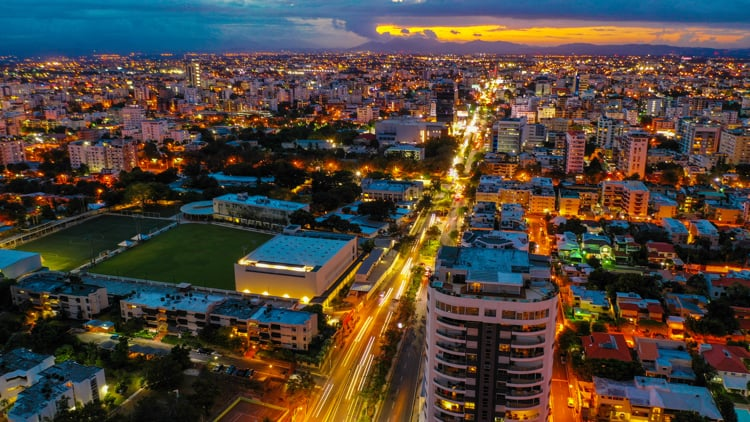
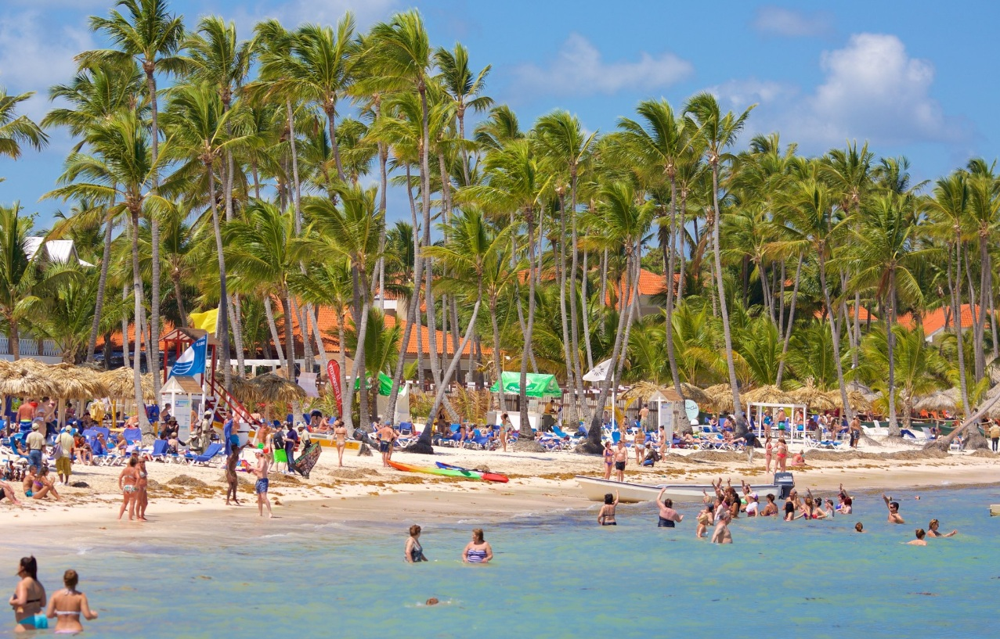
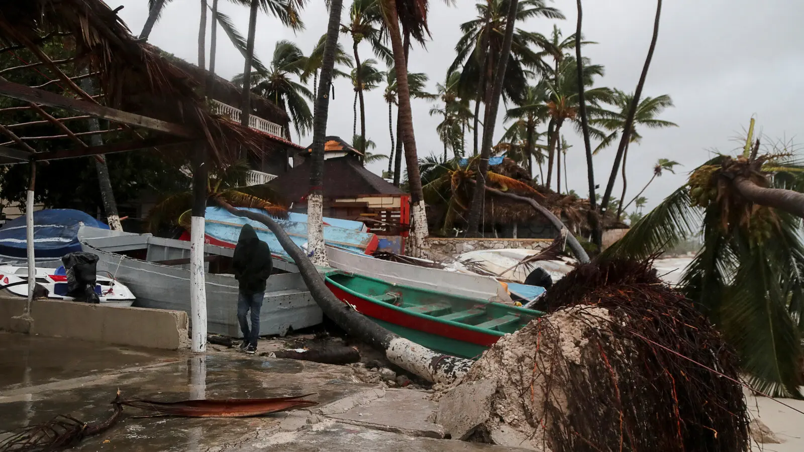

Hang Yu Chen • AAS 202 • Professor Herbert G. Ruffin II • 12/15/2025
Introduction

Since the mid-twentieth century, the Caribbean has undergone major economic transformation as former colonies and authoritarian states attempted to revamp and modernize their economies and integrate it into the global market. The Dominican Republic offers a particularly compelling history of this transformation. Following the assassination of dictator Rafael Trujillo in 1961, the country shifted away from a tightly controlled agricultural economy toward a service-oriented, tourism-driven development model. This transition generated rapid economic growth and positioned the Dominican Republic as one of the fastest-growing economies in the Caribbean.
However, this growth has come with significant costs. The country’s increasing reliance on tourism and foreign investment has produced structural vulnerabilities, including economic inequality, environmental degradation, and heightened exposure to climate-related disasters. Hurricanes, global recessions, and pandemics have repeatedly demonstrated how fragile tourism-dependent economies can be.
While post-1960 economic reforms enabled the Dominican Republic to modernize and grow, dependence on tourism and external capital has made the country economically fragile and environmentally vulnerable. Understanding this balance between growth and risk is essential for evaluating the sustainability of development strategies in the Caribbean.
Historical Background
From 1930 until his assassination in 1961, Rafael Trujillo ruled the Dominican Republic through an authoritarian regime that exerted near-total control over the economy. Large portions of the agricultural, industrial, and financial sectors were owned directly by Trujillo or his associates. Economic growth during this period benefited a small elite, while the broader population remained impoverished and politically marginalized. Foreign investment was limited, and the economy remained largely agricultural, centered on sugar production.
The end of Trujillo’s regime marked a turning point. Post-1961 governments sought to distance the country from authoritarian control and encourage economic modernization. Political instability continued during the 1960s, but by the 1970s the Dominican Republic increasingly adopted market-oriented reforms designed to attract foreign investment. These reforms included tax incentives, free-trade zones, and large-scale tourism development projects, particularly along the country’s coasts.
This shift represented a fundamental transformation. Instead of focusing on domestic agriculture and state-controlled industries, the Dominican Republic reoriented itself toward the global economy, emphasizing services, tourism, and export-oriented manufacturing. While these changes spurred growth, they also laid the groundwork for future dependency on external markets.
Geographic Context
The Dominican Republic’s geographic location in the Caribbean places it
directly in the Atlantic hurricane belt. Its coastal orientation explains
both the rise of tourism and its vulnerability to climate-related disasters.
Tourism as Economic Driver

Tourism is one of the Dominican Republic’s most important economic sectors. Over 10 million visitors
arrived in 2023, making it the most visited Caribbean destination and accounting for around 11.6%
of GDP. :contentReference[oaicite:0]{index=0}
In 2024, the tourism sector contributed roughly $20.5 billion to GDP and created over 876,000 jobs—
about 17% of total employment. :contentReference[oaicite:1]{index=1}
Inequality & Labor
Although tourism fuels national growth, it has not benefited all communities equally. Wealth is
concentrated in coastal regions, while rural areas and Haitian migrant workers often remain in
low-wage jobs without sufficient protections.
Climate Change & Vulnerability

The Dominican Republic is highly exposed to climate impacts like hurricanes, floods, and sea-level
rise. Its location in the hurricane belt frequently damages coastal infrastructure and tourism
resources. :contentReference[oaicite:2]{index=2}
To address these risks, the country is pursuing climate adaptation strategies including coastal
protection and renewable energy investment. :contentReference[oaicite:3]{index=3}
Postcolonial Dependency
Tourism-led growth has reinforced economic dependency on foreign capital and global markets. Many
resorts and tourism services are foreign owned, with profits largely repatriated abroad, limiting
domestic wealth accumulation and economic sovereignty.
Policy & Future Outlook
The Dominican government has tried to diversify with policies aimed at renewable energy, free-trade
zones, and sustainable tourism. These efforts can reduce vulnerability, but climate risks and
inequality remain critical challenges.
Conclusion
The Dominican Republic’s experience highlights both the opportunities and risks associated with
tourism-driven growth. Sustainable and inclusive economic strategies are essential for lasting
resilience in the face of global challenges.
References
World Bank. (2023). Dominican Republic overview. Retrieved from World Bank.
World Travel & Tourism Council. (2025). Tourism economic impact report.
"Tourism in the Dominican Republic" Wikipedia.
"Dominican Republic tourism GDP & jobs 2024" Hotel News Resource.
Climate vulnerability info from ClimateYou & UNEP GRID.